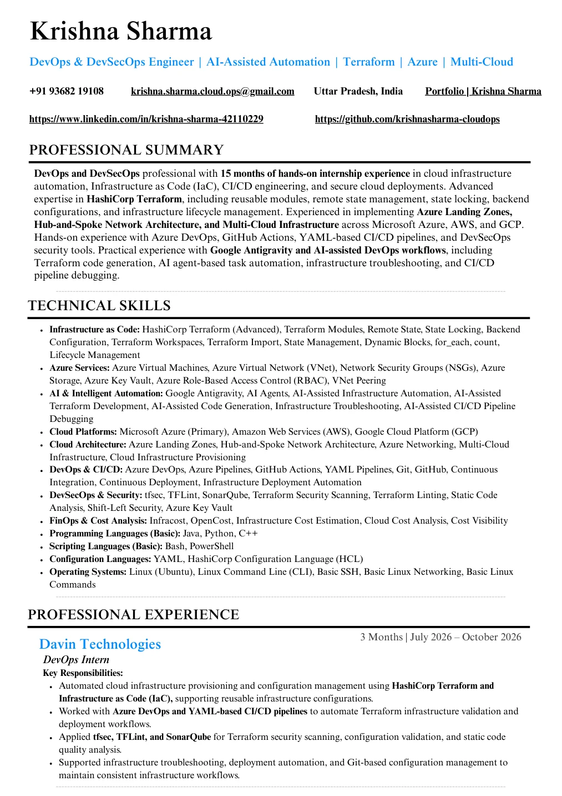

Infrastructure as Code
Advanced Terraform: reusable modules, state, locking, workspaces, remote backends, lifecycle and HCL.
I build cloud foundations that are repeatable, secure, and designed to scale. From Terraform modules and Azure architecture to DevSecOps pipelines and AI-assisted workflows.
Clear architecture.
Reviewable changes.
Security as a habit.
I'm Krishna Sharma, a DevOps & DevSecOps professional focused on infrastructure as code, cloud networking, and automated delivery.
Across 15 months of internships with DevOps Insider and Davin Technologies, I've worked with Terraform, Microsoft Azure, AWS, GCP, CI/CD tooling, security checks, and AI-assisted infrastructure workflows.
I gravitate toward systems that are easy to understand, maintain and safely change—where Terraform plans are reviewable, deployments follow repeatable patterns, and engineering decisions stay visible.
Five infrastructure and automation projects grounded in real internship work. Select any project to explore its engineering approach.
◌ Project descriptions reflect resume-reported work. Architectural visualizations are illustrative; no unverified performance claims.
Interactive reference patterns behind the kind of cloud infrastructure and delivery systems I've worked with.
A structured Azure infrastructure pattern using Terraform-managed landing zones, hub-and-spoke networking, VNets, peering and access controls.
A conceptual review-first pipeline combining Azure DevOps or GitHub Actions with Terraform validation, security checks, plan review and controlled deployment.
Shared IaC principles for Azure, AWS and GCP: reusable modules, backend configuration, remote state, locking and environment-aware deployments.
Focused on tools used in cloud architecture, infrastructure automation, secure delivery and cost awareness.
Advanced Terraform: reusable modules, state, locking, workspaces, remote backends, lifecycle and HCL.
Azure-first architecture, VNets, NSGs, RBAC, Key Vault, Landing Zones and Hub-and-Spoke deployments.
Azure DevOps YAML pipelines, GitHub Actions, Git and repeatable infrastructure delivery flows.
Shift-left Terraform scanning, linting and code quality checks integrated into infrastructure workflows.
Google Antigravity and AI agents for assisted code generation, troubleshooting and pipeline debugging.
Infracost, OpenCost and basic Linux, Bash, PowerShell, Python, Java and C++ foundations.
Explore an illustrative Terraform delivery sequence. This interactive terminal demonstrates concepts, not a connection to a live infrastructure environment.
Practical internship experience, not inflated job titles or fictional impact numbers.
Supported Terraform-based cloud provisioning, Azure DevOps YAML pipeline workflows, configuration validation and security analysis using tfsec, TFLint and SonarQube.
Worked across Terraform multi-cloud provisioning, Azure Landing Zones, modular infrastructure, CI/CD workflows, security validation, infrastructure cost visibility and Google Antigravity-assisted troubleshooting.
ISBM University, Chhattisgarh
Review the source resume for the detailed technologies, experience and project scope behind this portfolio.
Original PDF retained. The printed LinkedIn URL in the PDF may differ from the updated site contact link.

Interested in Terraform, Azure architecture, secure CI/CD, DevSecOps, or AI-assisted infrastructure workflows? Let's talk.
Offline resume knowledge mode · Not a live generative AI model